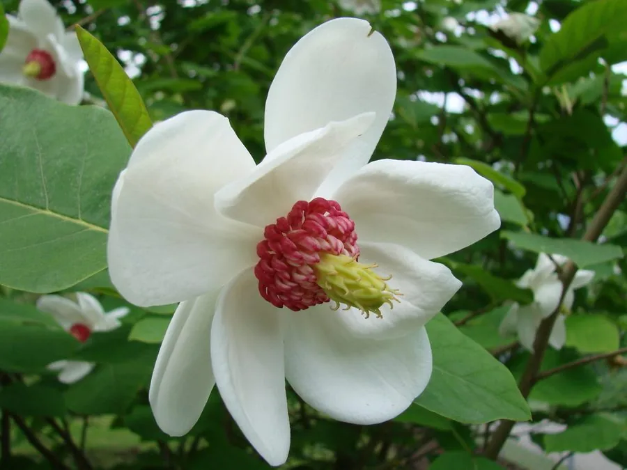

乔木 · 植物界
天女木兰 Magnolia sieboldii

木兰科玉兰属落叶小乔木，花白色杯状、花梗细长下垂，盛开时随风摇曳如天女散花，是珍贵的观赏香料树种。
- 分类
- 门被子植物门纲木兰纲目木兰目科木兰科属玉兰属
- 栖息环境
- 海拔 800–2000 米的山地阴坡、沟谷杂木林，喜凉爽湿润
- 地理分布
- 中国辽宁、山东、浙江、安徽、江西、湖北、湖南、广西、贵州；日本、朝鲜半岛
- 保护级别
- 暂无 IUCN 评估；野生种群受关注，多地被列为保护植物
物种志
天女木兰为木兰科玉兰属落叶小乔木，高四至十米，树皮灰白色，小枝细长。叶片膜质，倒卵形至宽倒卵形，先端短渐尖，边缘全缘，背面被短柔毛。花与叶同时开放，花梗细长下垂，花被片九枚，白色，倒卵形，雄蕊紫红色，花药内向，花期五至六月，芳香浓郁；聚合果穗状，成熟时紫红色，果期九至十月。
天女木兰分布于辽宁、山东、浙江、安徽、江西、湖北、湖南、广西、贵州等地，日本、朝鲜半岛也有，多生于海拔八百至两千米的山地阴坡和沟谷杂木林中。它喜凉爽湿润、半阴的环境，适宜腐殖质丰富、排水良好的酸性土壤，不耐高温干旱。花大而香，可提取芳香油，也可作庭园观赏树；木材可制器具。由于野生资源逐渐减少，各地多将其列为保护植物。
形态与习性
- 株高4–10 m，小乔木状
- 花期5–6 月，花白色、下垂
- 果期9–10 月，聚合果紫红色
- 光照喜半阴，忌强光暴晒
- 水分喜湿润，不耐干旱
- 土壤腐殖质丰富的酸性土
- 主要用途庭园观赏，花可提取芳香油
趣味知识
- 天女木兰的花梗细长下垂，花朵盛开时随风摆动，因此得名天女花。
- 它的花具浓郁香气，是提取高级芳香油的原料之一。
- 天女木兰在辽宁桓仁、浙江临安等地被当作地方珍稀植物加以保护。